Air enters the body through the nose or mouth and travels down to the lungs.
공기는 코나 입을 통해 몸 안으로 들어와 폐 안쪽으로 내려갑니다.
The order of the airways is: Trachea → Bronchi → Bronchioles → Alveoli.
공기가 지나가는 순서는 기관 → 기관지 → 세기관지 → 폐포 입니다.
The trachea is held open by rings of cartilage, so it never collapses.
기관은 연골 고리가 받쳐주고 있어서 절대 무너지지 않습니다.
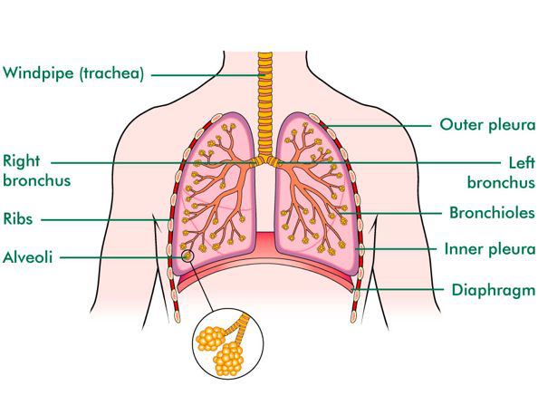
The trachea (windpipe) carries air from the throat down towards the lungs.
기관(trachea)은 목에서 폐 쪽으로 공기를 운반하는 관 (= 숨길).
The trachea splits into two bronchi, one going into each lung.
기관은 두 개의 기관지(bronchi)로 갈라져 각각의 폐로 들어갑니다.
The bronchi divide into smaller tubes called bronchioles inside the lungs.
기관지는 폐 안에서 더 작은 세기관지(bronchioles)로 갈라집니다.
At the end of each bronchiole are tiny air sacs called alveoli, where gas exchange happens.
세기관지 끝에는 작은 공기 주머니인 폐포(alveoli)가 있고, 여기서 기체 교환이 일어납니다.
The diaphragm (a dome-shaped muscle) and the intercostal muscles (between the ribs) move the chest during breathing.
횡격막(diaphragm)은 돔 모양 근육, 늑간근(intercostal muscles)은 갈비뼈 사이 근육 — 호흡 때 가슴을 움직입니다.
The two lungs are not the same size.
두 폐의 크기는 같지 않습니다.
The left lung is smaller than the right lung to leave space for the heart.
왼쪽 폐가 오른쪽보다 더 작은 이유는 심장이 들어갈 공간을 비워줘야 하기 때문입니다.
The heart sits slightly to the left of the chest.
심장은 가슴의 약간 왼쪽에 위치합니다.
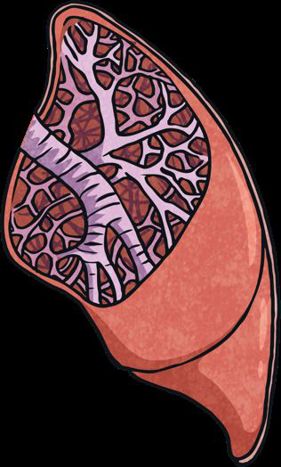
The walls of the airways contain two special types of cell.
기관 벽에는 두 종류의 특별한 세포가 있습니다.
Goblet cells produce mucus, a sticky liquid that traps dust, dirt and pathogens.
술잔세포(goblet cells)는 끈적한 점액(mucus)을 만들어 먼지·세균을 잡습니다.
Ciliated cells have tiny hairs called cilia that beat to sweep the mucus up towards the throat.
섬모세포(ciliated cells)는 작은 털인 섬모(cilia)로 점액을 목 쪽으로 밀어 올립니다.
The mucus is then swallowed or coughed out, removing the trapped dirt.
그 점액은 삼키거나 기침으로 뱉어내서 먼지를 제거합니다.
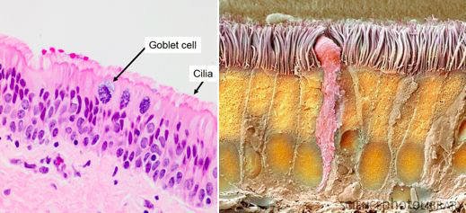
Breathing (or ventilation) is the physical movement of air into and out of the lungs.
호흡 운동(breathing)은 공기를 폐로 넣었다 빼는 물리적 움직임입니다.
Respiration is a chemical reaction inside cells that releases energy from glucose.
세포 호흡(respiration)은 세포 안에서 포도당으로 에너지를 만드는 화학 반응입니다.
These two words look similar but mean completely different things.
두 단어는 비슷해 보이지만 완전히 다른 의미입니다.
The intercostal muscles contract and pull the ribcage up and out.
늑간근이 수축해서 흉곽을 위·바깥쪽으로 끌어올립니다.
The diaphragm contracts and flattens, moving downwards.
횡격막이 수축해서 평평해지며 아래로 내려옵니다.
This increases the volume of the chest cavity.
이렇게 하면 흉강의 부피가 커집니다.
The pressure inside the lungs decreases below the outside air pressure.
폐 안 압력이 바깥 공기 압력보다 낮아집니다.
Air rushes into the lungs through the trachea to equalise the pressure.
그래서 공기가 기관을 통해 폐 안으로 들어옵니다 (압력을 맞추려고).
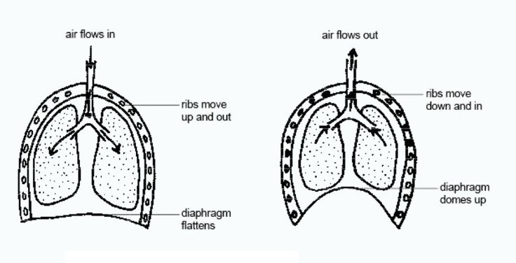
The intercostal muscles relax, so the ribcage moves down and in.
늑간근이 이완해서 흉곽이 아래·안쪽으로 움직입니다.
The diaphragm relaxes and returns to its dome shape, moving upwards.
횡격막이 이완해서 다시 돔 모양으로 위로 올라갑니다.
The chest cavity volume decreases.
흉강의 부피가 줄어듭니다.
The pressure inside the lungs increases above the outside pressure.
폐 안 압력이 바깥보다 높아집니다.
Air is pushed out of the lungs.
그래서 공기가 폐 밖으로 빠져나갑니다.
Vital capacity is the maximum volume of air you can breathe in and out in one breath.
폐활량(vital capacity)은 한 번에 들이쉬고 내쉴 수 있는 최대 공기량입니다.
It is measured using a device called a spirometer.
폐활량계(spirometer)라는 기구로 측정합니다.
Vital capacity differs from person to person, depending on age, sex and fitness level.
나이·성별·운동량에 따라 사람마다 폐활량이 다릅니다.
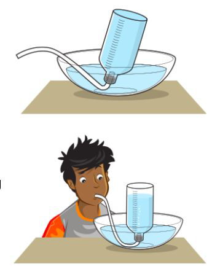
A bell jar with two balloons inside and a rubber sheet on the bottom models how the lungs work.
유리 종 안에 풍선 2개와 바닥에 고무막을 단 장치로 폐를 모델링합니다.
The balloons represent the lungs, the jar represents the ribcage, and the rubber sheet represents the diaphragm.
풍선 = 폐, 유리 종 = 흉곽, 고무막 = 횡격막을 나타냅니다.
Pulling the rubber sheet down increases the volume inside, lowers the pressure, and the balloons inflate — just like the lungs!
고무막을 아래로 당기면 부피가 커지고 압력이 낮아져서 풍선이 부풀어요 — 폐와 같은 원리!
Limitations: the rigid jar cannot expand like real ribs, and balloons do not have alveoli.
한계: 단단한 유리는 갈비뼈처럼 늘어나지 못하고, 풍선에는 폐포가 없습니다.
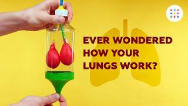
Inhaled air contains about 21% oxygen and only 0.04% carbon dioxide.
들숨에는 산소가 약 21%, 이산화탄소는 0.04%만 들어있습니다.
Exhaled air contains less oxygen (16%) but much more carbon dioxide (4%).
날숨에는 산소가 더 적고(16%) 이산화탄소가 훨씬 많습니다(4%).
Exhaled air also has more water vapour.
날숨에는 수증기도 더 많습니다.
Nitrogen stays the same (78%) because our body does not use it.
질소는 우리 몸이 쓰지 않으므로 78%로 같습니다.
The differences exist because cells use oxygen and make CO₂ during aerobic respiration.
이런 차이는 세포가 유산소 호흡 중 산소를 쓰고 이산화탄소를 만들기 때문입니다.
Diffusion is the net movement of particles from a region of high concentration to a region of low concentration.
확산(diffusion)은 입자가 농도가 높은 곳에서 낮은 곳으로 이동하는 것입니다.
In the alveoli, oxygen is high in the air and low in the blood, so oxygen diffuses into the blood.
폐포에서 산소는 공기 쪽이 높고 혈액 쪽이 낮으므로, 산소는 혈액으로 확산됩니다.
Carbon dioxide is high in the blood and low in the alveoli, so it diffuses into the alveoli.
이산화탄소는 혈액 쪽이 높고 폐포 쪽이 낮으므로, 폐포로 확산됩니다.
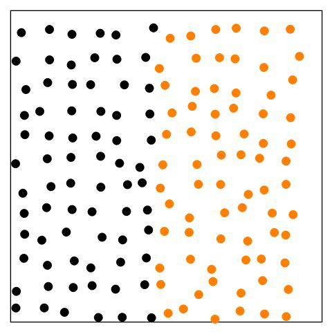
The alveoli are adapted in four ways to allow fast gas exchange.
폐포는 빠른 기체 교환이 되도록 4가지 적응이 있습니다.
1) Thin walls — only one cell thick — give a very short diffusion distance.
1) 얇은 벽 (세포 한 층)으로 확산 거리가 매우 짧습니다.
2) Large surface area — about 600 million alveoli together cover an area as big as a tennis court.
2) 넓은 표면적 — 약 6억 개의 폐포가 합치면 테니스 코트만큼 넓습니다.
3) Many capillaries surround each alveolus, providing a good blood supply.
3) 각 폐포는 많은 모세혈관으로 둘러싸여 혈액 공급이 충분합니다.
4) The surface is moist, so gases dissolve in the liquid and diffuse more easily.
4) 표면이 촉촉해서 기체가 액체에 녹아 더 잘 확산됩니다.
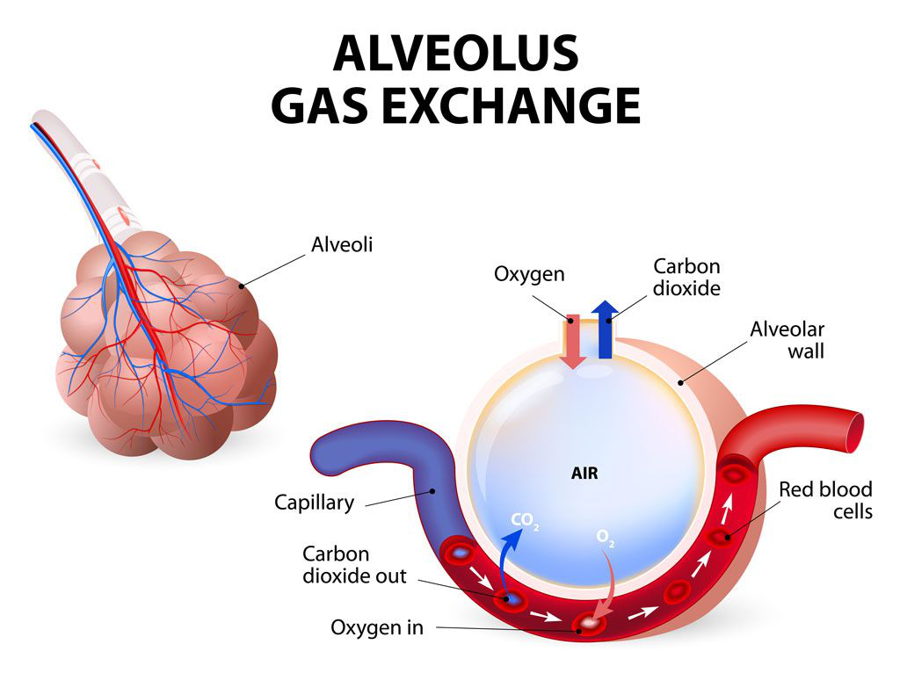
Oxygen diffuses from the alveoli into the blood, where it binds to haemoglobin inside red blood cells.
산소는 폐포에서 혈액으로 확산되어, 적혈구 안의 헤모글로빈과 결합합니다.
At the same time, carbon dioxide diffuses from the blood into the alveoli and is breathed out.
동시에 이산화탄소는 혈액에서 폐포로 확산되어 숨으로 배출됩니다.
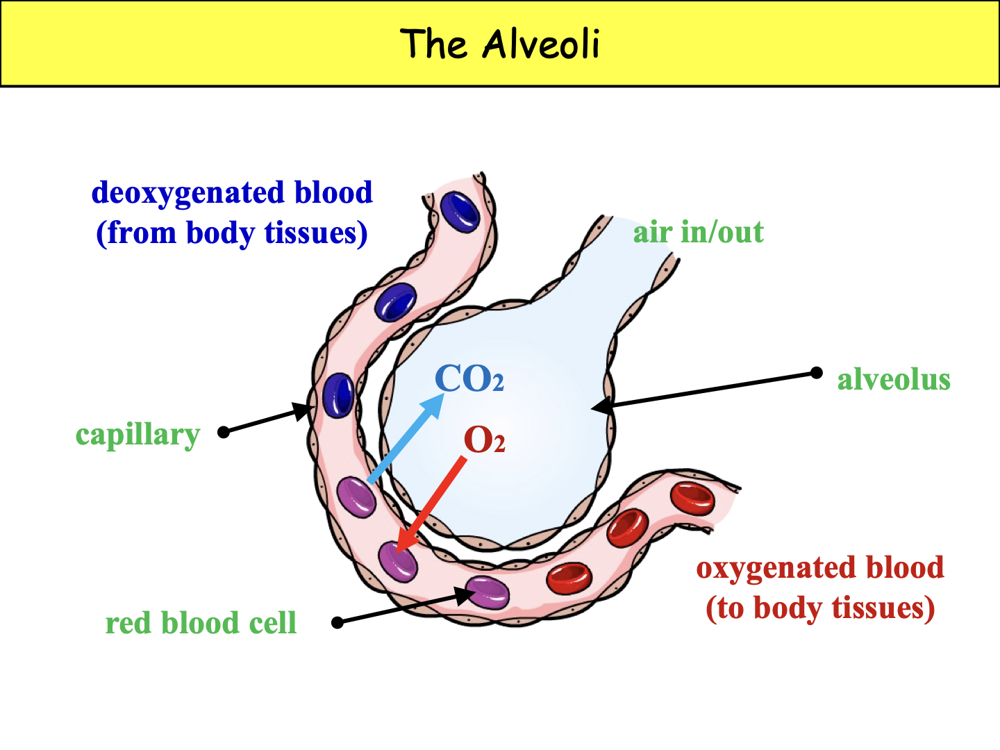
Aerobic respiration is a chemical reaction that uses oxygen to break down glucose and release lots of energy.
유산소 호흡(aerobic respiration)은 산소를 이용해 포도당을 분해하여 많은 에너지를 내는 화학 반응입니다.
Word equation: Glucose + Oxygen → Carbon dioxide + Water + Energy
단어 방정식: 포도당 + 산소 → 이산화탄소 + 물 + 에너지
The chemical formula of glucose is C₆H₁₂O₆.
포도당의 화학식은 C₆H₁₂O₆ 입니다.
Aerobic respiration takes place inside tiny organelles called mitochondria.
유산소 호흡은 세포 안 작은 소기관인 미토콘드리아(mitochondria)에서 일어납니다.
Mitochondria are found in almost every cell of the body.
미토콘드리아는 몸의 거의 모든 세포에 있습니다.
Cells that need lots of energy (e.g. muscle cells) have many more mitochondria than others.
에너지를 많이 쓰는 세포(예: 근육세포)는 더 많은 미토콘드리아를 가집니다.
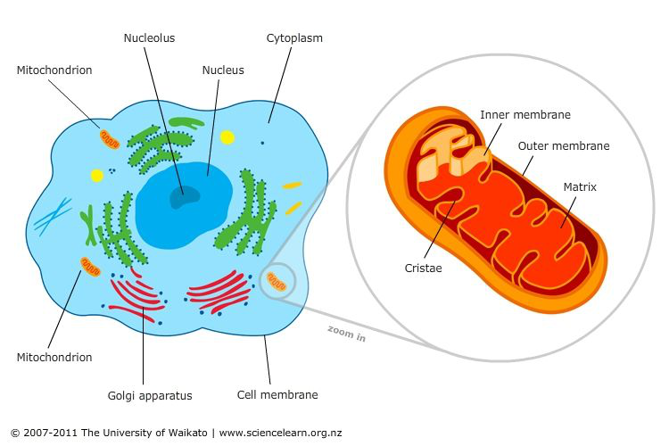
The breathing system brings in oxygen that respiration needs.
호흡 운동은 세포 호흡에 필요한 산소를 들여옵니다.
It also removes the carbon dioxide that respiration produces.
또한 세포 호흡으로 생긴 이산화탄소를 내보냅니다.
This is why we breathe faster during exercise — our cells need more oxygen.
운동할 때 더 빨리 숨 쉬는 이유 — 세포가 산소를 더 많이 필요로 하기 때문입니다.
Limewater is the chemical used to test for carbon dioxide.
석회수(limewater)는 이산화탄소를 검사하는 시약입니다.
When CO₂ is bubbled through limewater, the limewater changes from clear (colourless) to cloudy (milky).
이산화탄소를 석회수에 통과시키면 석회수가 투명에서 우유빛으로 흐려집니다.
If you breathe out into limewater and it goes cloudy, this proves your exhaled air contains CO₂.
날숨을 석회수에 불어서 흐려지면, 날숨에 CO₂가 있다는 증거입니다.
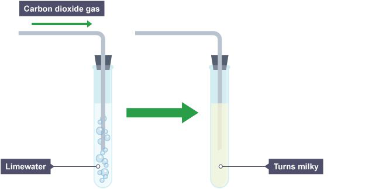
Anaerobic respiration happens without oxygen and releases much less energy than aerobic respiration.
무산소 호흡(anaerobic respiration)은 산소 없이 일어나며 유산소 호흡보다 훨씬 적은 에너지를 냅니다.
In our muscle cells, the word equation is: Glucose → Lactic acid + Energy
우리 근육세포에서는 단어 방정식이 포도당 → 젖산 + 에너지 입니다.
The glucose is only partly broken down, so less energy is released.
포도당이 완전히 분해되지 않기 때문에 에너지가 적게 나옵니다.
It happens during short, intense exercise such as a 100 m sprint.
100m 전력 질주처럼 짧고 격렬한 운동 때 일어납니다.
The heart and lungs cannot deliver oxygen fast enough to the muscles.
심장과 폐가 근육에 산소를 충분히 빨리 보내지 못합니다.
Muscle cells switch to anaerobic respiration so they can keep working quickly.
근육 세포는 빠르게 일하기 위해 무산소 호흡으로 전환합니다.
Lactic acid builds up in the muscles, causing pain and fatigue.
근육에 젖산이 쌓여서 통증과 피로가 생깁니다.
After exercise, you keep breathing deeply for some time even though you have stopped moving.
운동 후 멈췄는데도 한동안 거친 숨이 계속됩니다.
This is because the body needs extra oxygen to break down the lactic acid that built up.
몸이 쌓인 젖산을 분해하려고 추가 산소가 필요하기 때문입니다.
This extra oxygen requirement is called the oxygen debt.
이 추가 산소 요구량을 산소 빚(oxygen debt)이라고 합니다.
| Aerobic (유산소) | Anaerobic (무산소) | |
|---|---|---|
| Oxygen 산소 | Needed 필요 | Not needed 불필요 |
| Glucose breakdown 포도당 분해 | Complete 완전 | Incomplete 불완전 |
| Products 생성물 | CO₂ + Water | Lactic acid 젖산 |
| Energy 에너지 | A lot 많음 | A little 적음 |
Plasma — a yellowish liquid that transports cells, dissolved glucose, CO₂ and other substances around the body.
혈장(plasma) — 노란 액체로, 세포·당·이산화탄소 등을 온몸으로 운반합니다.
Red blood cells — carry oxygen from the lungs to the body cells.
적혈구(red blood cells) — 폐에서 몸 세포까지 산소를 운반합니다.
White blood cells — fight pathogens and protect us from disease.
백혈구(white blood cells) — 병원체와 싸워 우리를 질병으로부터 보호합니다.
Platelets — form blood clots and scabs at wounds.
혈소판(platelets) — 상처에 혈액 응고와 딱지를 만듭니다.
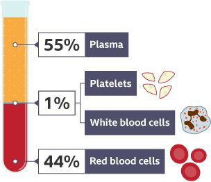
Red blood cells have a biconcave shape (dipped on both sides), giving a large surface area to absorb oxygen.
적혈구는 양쪽이 오목한(biconcave) 모양으로 표면적이 넓어 산소를 잘 흡수합니다.
They have no nucleus, leaving more room inside to carry oxygen.
적혈구는 핵이 없어서 산소를 운반할 공간이 더 많습니다.
Inside they are packed with haemoglobin, a red protein that binds to oxygen.
안에는 산소와 결합하는 빨간 단백질인 헤모글로빈(haemoglobin)이 가득 차 있습니다.
Red blood cells are made in the bone marrow.
적혈구는 골수(bone marrow)에서 만들어집니다.
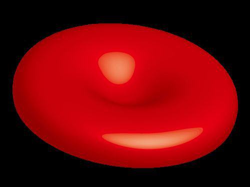
There are two main types of white blood cell that defend the body from disease.
우리 몸을 질병에서 지키는 백혈구는 두 종류가 있습니다.
Phagocytes surround, engulf and destroy pathogens — this process is called phagocytosis.
식세포(phagocytes)는 병원체를 둘러싸 삼키고 분해합니다 — 이를 식작용(phagocytosis)이라 합니다.
Lymphocytes produce antibodies — special proteins that stick to pathogens and clump them together.
림프구(lymphocytes)는 항체(antibodies)를 만들어 병원체에 붙어 뭉치게 합니다.
The antibodies mark the pathogens so phagocytes can find and destroy them more easily.
항체가 병원체를 표시해서 식세포가 더 쉽게 잡아먹습니다.
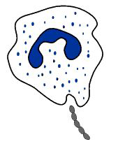
In the lungs, where oxygen concentration is high, haemoglobin binds to oxygen to form oxyhaemoglobin.
폐에서는 산소 농도가 높으므로, 헤모글로빈이 산소와 결합해 옥시헤모글로빈이 됩니다.
Near the body cells, where oxygen concentration is low, the reaction reverses.
몸 세포 근처에서는 산소 농도가 낮으므로 반응이 반대로 일어납니다.
Haemoglobin releases the oxygen so cells can use it for respiration.
헤모글로빈이 산소를 놓아주어 세포가 호흡에 쓸 수 있게 합니다.
The oxygen molecule enters through the nose or mouth.
산소 분자는 코나 입으로 들어옵니다.
It travels down the trachea, which is kept open by rings of cartilage.
연골 고리로 열려 있는 기관을 따라 내려갑니다.
The trachea divides into two bronchi, then into smaller bronchioles.
기관은 두 개의 기관지로 갈라지고, 더 작은 세기관지로 나뉩니다.
The bronchioles end in tiny air sacs called alveoli, where oxygen diffuses into the blood capillaries.
세기관지는 작은 공기 주머니인 폐포로 끝나고, 거기서 산소는 모세혈관 안의 혈액으로 확산됩니다.
Breathing (ventilation) is the physical movement of air into and out of the lungs, caused by the diaphragm and intercostal muscles.
호흡 운동(breathing)은 횡격막과 늑간근이 일으키는 공기의 물리적 움직임입니다.
Respiration is a chemical reaction in cells where glucose reacts with oxygen to release energy.
세포 호흡(respiration)은 세포에서 포도당이 산소와 반응해 에너지를 내는 화학 반응입니다.
They are not the same — breathing is a movement, while respiration is a chemical process.
둘은 같지 않습니다 — Breathing은 움직임, Respiration은 화학 과정입니다.
The intercostal muscles contract and pull the ribcage up and out.
늑간근이 수축해서 흉곽을 위·바깥쪽으로 끌어올립니다.
The diaphragm contracts and flattens, moving downwards.
횡격막이 수축해서 평평해지며 아래로 내려옵니다.
This increases the volume of the chest cavity and decreases the pressure inside the lungs.
이렇게 하면 흉강 부피가 커지고 폐 안 압력이 낮아집니다.
Air flows into the lungs (from high outside pressure to low inside pressure).
공기는 압력이 높은 바깥에서 낮은 폐 안쪽으로 들어옵니다.
1) The walls are only one cell thick, giving a very short diffusion distance.
1) 벽이 세포 한 층이라 확산 거리가 매우 짧습니다.
2) The alveoli give a very large surface area (about 600 million alveoli) so a lot of gas exchange can happen at once.
2) 폐포가 약 6억 개라 표면적이 매우 넓어 많은 기체 교환이 동시에 가능합니다.
3) Each alveolus is surrounded by many capillaries, giving a good blood supply (also accept moist surface).
3) 각 폐포는 많은 모세혈관으로 둘러싸여 혈액 공급이 충분합니다 (촉촉한 표면도 정답).
Inhaled air has about 21% oxygen and 0.04% carbon dioxide.
들숨에는 산소 21%, 이산화탄소 0.04%가 있습니다.
Exhaled air has less oxygen (about 16%) and much more carbon dioxide (about 4%) and water vapour.
날숨에는 산소가 줄어들고(16%), 이산화탄소(4%)와 수증기가 늘어납니다.
This is because cells use up oxygen and produce carbon dioxide and water during aerobic respiration.
세포가 유산소 호흡 중 산소를 쓰고 이산화탄소·물을 만들기 때문입니다.
Nitrogen is the same (78%) because our body does not use it.
질소는 우리 몸이 쓰지 않아 78%로 같습니다.
Diffusion is the net movement of particles from a region of higher concentration to a region of lower concentration.
확산은 입자가 농도가 높은 곳에서 낮은 곳으로 이동하는 것입니다.
At the alveoli, oxygen diffuses from the alveolus into the blood because oxygen is higher in the air.
폐포에서 산소는 공기 쪽이 높으므로 폐포 → 혈액으로 확산됩니다.
Carbon dioxide diffuses from the blood into the alveolus because CO₂ is higher in the blood.
이산화탄소는 혈액 쪽이 높으므로 혈액 → 폐포로 확산됩니다.
Word equation: Glucose + Oxygen → Carbon dioxide + Water + Energy.
단어 방정식: 포도당 + 산소 → 이산화탄소 + 물 + 에너지.
Aerobic respiration takes place inside the mitochondria of cells.
유산소 호흡은 세포 안 미토콘드리아에서 일어납니다.
During intense exercise, muscle cells need energy very quickly.
격렬한 운동 때 근육 세포는 에너지가 매우 빨리 필요합니다.
The heart and lungs cannot deliver enough oxygen in time, so cells switch to anaerobic respiration.
심장·폐가 산소를 충분히 빨리 보내지 못해 세포는 무산소 호흡으로 전환합니다.
This produces lactic acid, which builds up in the muscles and causes pain.
이때 젖산이 만들어져 근육에 쌓이고 통증을 일으킵니다.
After exercise, extra oxygen (the oxygen debt) is needed to break down the lactic acid.
운동 후에는 젖산을 분해할 추가 산소(산소 빚)가 필요합니다.
Bubble the gas through limewater.
기체를 석회수에 통과시킵니다.
If CO₂ is present, the limewater turns from clear to cloudy (milky).
이산화탄소가 있다면 석회수가 투명 → 우유빛 흐림으로 변합니다.
Red blood cells are biconcave (dipped on both sides), giving a large surface area for fast oxygen diffusion.
적혈구는 양쪽이 오목한 모양으로 산소 확산을 위한 표면적이 큽니다.
They have no nucleus, leaving more room inside to carry oxygen.
핵이 없어서 산소를 운반할 공간이 더 많습니다.
They are packed with haemoglobin, a red protein that binds to oxygen.
산소와 결합하는 빨간 단백질 헤모글로빈이 가득 차 있습니다.
Haemoglobin binds oxygen in the lungs and releases it where it is needed.
헤모글로빈은 폐에서 산소와 결합하고 필요한 곳에서 풀어줍니다.
1) Plasma — yellowish liquid that transports cells, glucose, CO₂ and wastes around the body.
1) 혈장 — 노란 액체로 세포·당·이산화탄소·노폐물을 운반합니다.
2) Red blood cells — carry oxygen using haemoglobin.
2) 적혈구 — 헤모글로빈으로 산소를 운반합니다.
3) White blood cells — fight pathogens and protect the body from disease.
3) 백혈구 — 병원체와 싸워 몸을 보호합니다.
4) Platelets — help blood to clot and form scabs over wounds.
4) 혈소판 — 혈액 응고를 돕고 상처에 딱지를 만듭니다.
Phagocytes are white blood cells that engulf and digest pathogens — this is called phagocytosis.
식세포는 병원체를 둘러싸 삼키고 분해하는 백혈구입니다 — 식작용이라 합니다.
Lymphocytes produce antibodies, special proteins that stick to specific pathogens.
림프구는 특정 병원체에 붙는 항체(특수 단백질)를 만듭니다.
The antibodies clump pathogens together and mark them.
항체는 병원체를 뭉치게 하고 표시합니다.
This makes it easier for phagocytes to find and destroy the pathogens.
그래서 식세포가 병원체를 더 쉽게 찾아 파괴할 수 있습니다.